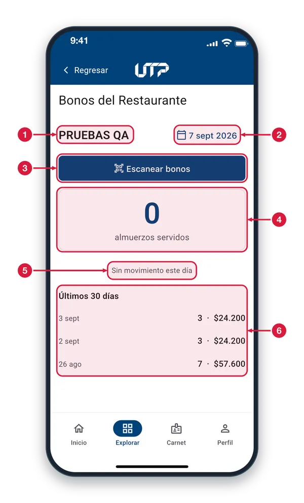
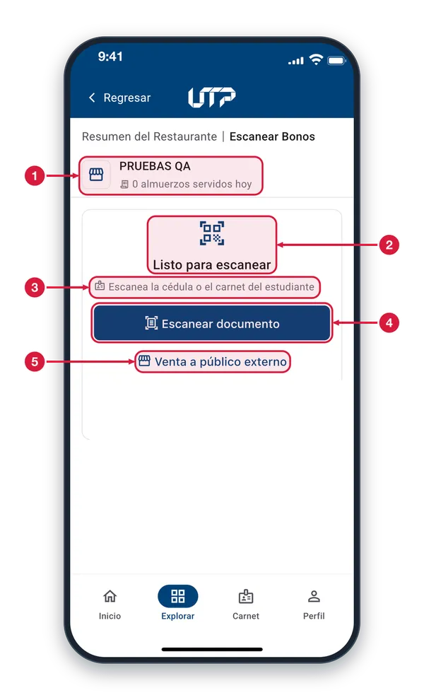
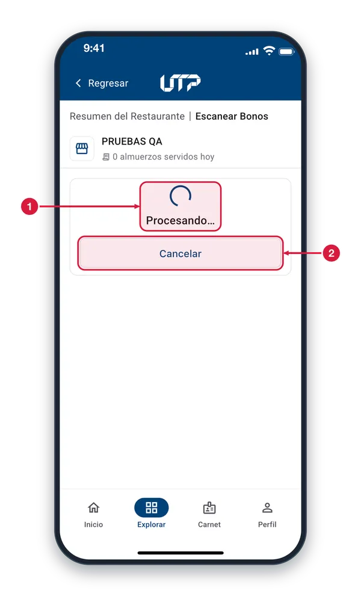
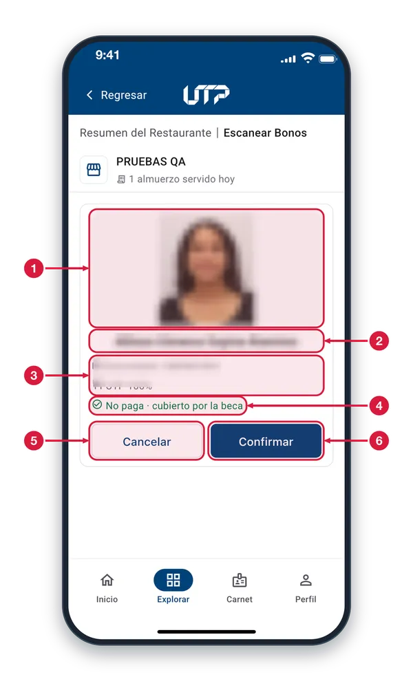
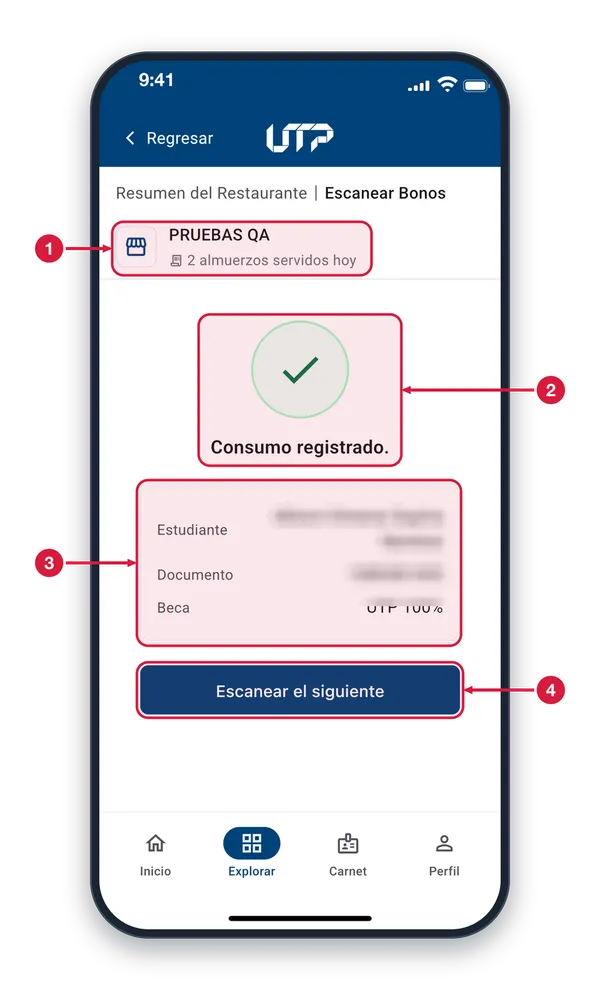
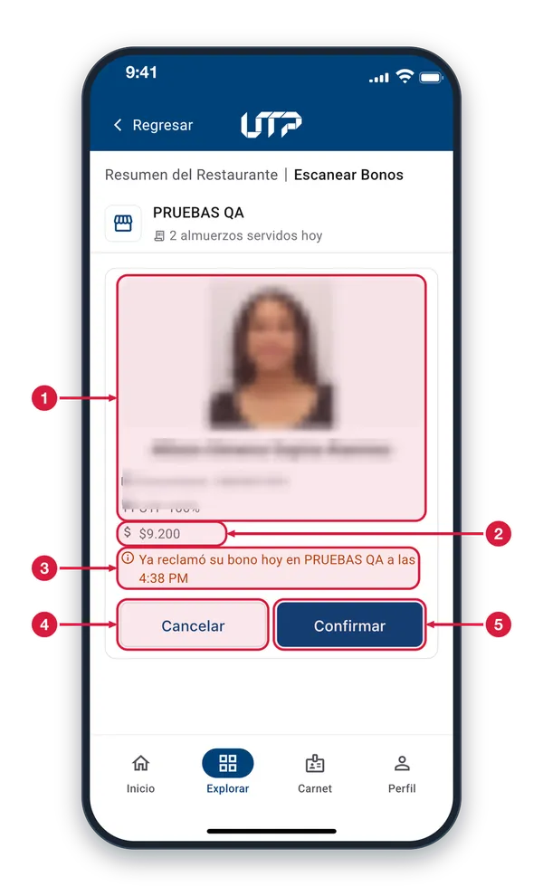
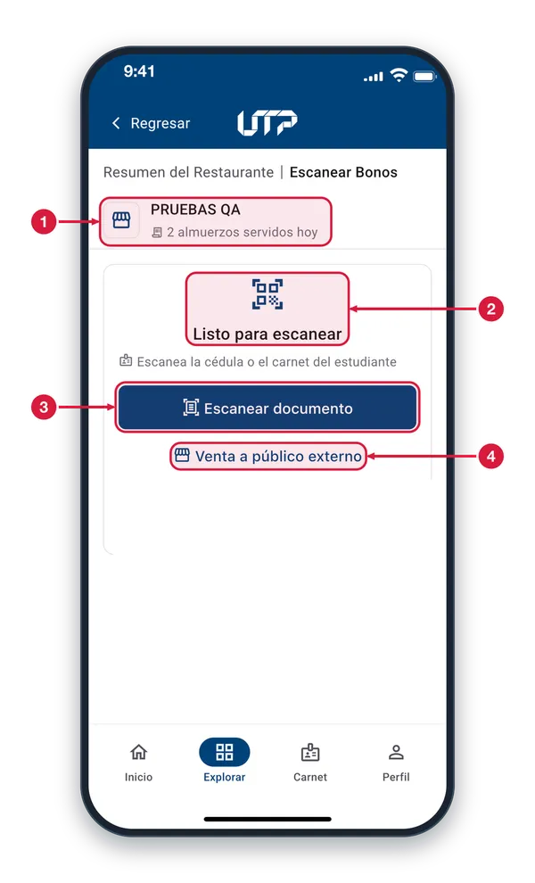
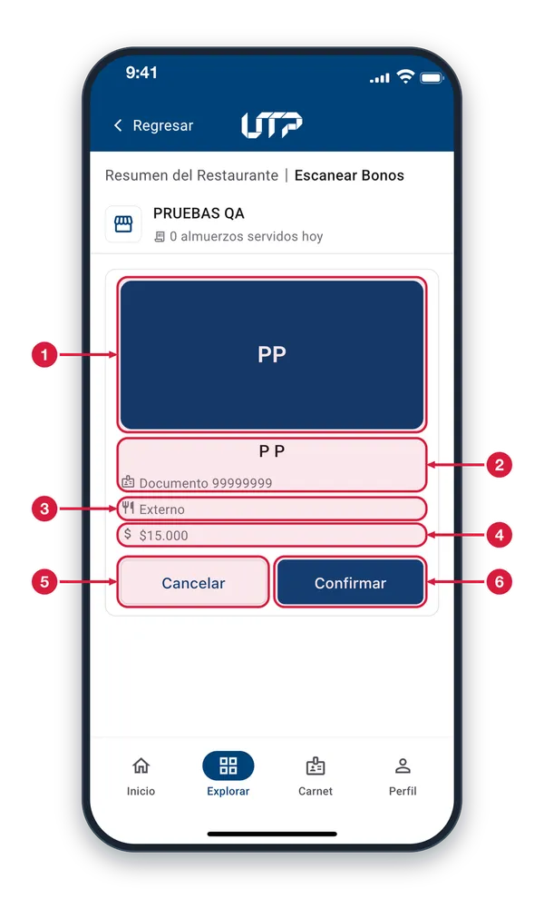
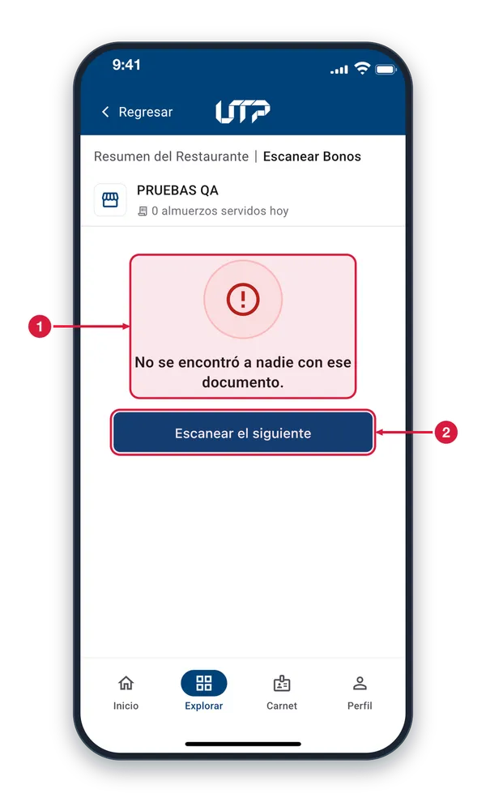

Para proveedores del restaurante universitario: lleva el control de los almuerzos servidos y valida a los estudiantes con beca.
El módulo de Bonos del Restaurante cuenta con:
Resumen del día y de los últimos 30 días
Escáner de cédula o carné del estudiante
Venta a público externo con confirmación
Registro de cada almuerzo servido
Solo podrás ver y hacer uso del módulo BONOS DEL RESTAURANTE si eres proveedor autorizado
Resumen del restaurante1 de 10
Revisa cuántos almuerzos ha servido tu restaurante, consulta días anteriores y entra al escáner de bonos.

Nombre del restaurante Muestra el restaurante que estás atendiendo; todas las cifras de esta pantalla son suyas. Si manejas varios, lo eliges antes en una lista.
Fecha del resumen Toca la fecha para elegir otro día (hasta un año atrás). El contador y el detalle se actualizan con el día que escojas.
Escanear bonos Abre la pantalla «Escanear Bonos», donde lees la cédula o el carné del estudiante y registras el almuerzo. Al volver, las cifras se actualizan.
Almuerzos servidos Cantidad de almuerzos entregados en el día elegido. El número sube cada vez que confirmas un consumo en el escáner.
Sin movimiento este día Aparece cuando en el día elegido no se entregó ningún almuerzo; no es un error. Con movimiento, aquí verás el detalle por tipo de beca.
Últimos 30 días Historial de los días con movimiento. Cada fila muestra la fecha, cuántos almuerzos se sirvieron y, si hubo cobro, su valor (por ejemplo, «3 · $24.200»).
Escáner de bonos en reposo2 de 10
Desde aquí atiendes a cada persona: escaneas su cédula o carné, o registras una venta a público externo.

Restaurante y contador Muestra el restaurante que atiendes y cuántos almuerzos ha servido hoy. El número se actualiza cada vez que confirmas un consumo.
Listo para escanear Indica que no hay ninguna consulta en curso. Al escanear un documento, esta tarjeta cambia para mostrar al estudiante o el resultado.
Qué documento escanear Puedes escanear la cédula o el carné del estudiante; con cualquiera de los dos la app lo identifica.
Escanear documento Abre la cámara para leer la cédula o el carné. Al leerlo, la app consulta al estudiante y muestra su tarjeta con el precio del almuerzo.
Venta a público externo Para quien paga el almuerzo completo sin ser un estudiante becado. Pide confirmar: al tocar «Registrar venta» se anota el almuerzo sin asociarlo a una persona.
Consultando al estudiante3 de 10
Mientras la app consulta el documento escaneado, muestra un aviso de espera y bloquea el botón de cancelar.

Procesando… La app está consultando al estudiante. Espera unos segundos: enseguida aparece su tarjeta o un mensaje con el resultado.
Cancelar (inactivo) Se ve apagado porque mientras la app trabaja no se puede cancelar. Cuando termine, podrás cancelar desde la tarjeta del estudiante.
Estudiante con beca4 de 10
Compara la foto y el documento con la persona y confirma el almuerzo gratuito cubierto por su beca.

Foto del estudiante Sirve para comprobar que quien tienes enfrente es la persona del documento. Si no hay foto, verás las iniciales de su nombre.
Nombre Nombre del estudiante registrado con el documento que escaneaste.
Documento y tipo de beca Número de documento y tipo de beca de alimentación del estudiante. Verifica que el documento coincida con el que te entregó.
Almuerzo gratis por beca «No paga · cubierto por la beca», en verde, significa que el almuerzo es gratuito: la beca lo cubre y no debes cobrarle nada.
Cancelar Descarta la consulta sin registrar nada y vuelve al escáner, listo para atender a otra persona.
Confirmar Registra el almuerzo como entregado. Toca «Confirmar» solo cuando vayas a servirlo; enseguida aparece «Consumo registrado».
Consumo registrado5 de 10
Confirma que el almuerzo quedó guardado y te muestra a quién se le registró.

Contador actualizado El número de almuerzos servidos hoy sube en el acto: ya cuenta el que acabas de registrar.
Consumo registrado La marca verde y el mensaje «Consumo registrado.» confirman que el almuerzo quedó guardado. Ya puedes entregarlo.
Resumen de lo entregado Muestra el estudiante, su documento y el tipo de beca con que se registró el almuerzo. Revísalo si necesitas confirmar a quién se le anotó.
Escanear el siguiente Vuelve al escáner en reposo para atender a la siguiente persona.
Estudiante que ya reclamó hoy6 de 10
Si la persona ya usó su bono del día, la app lo advierte y muestra el precio del segundo almuerzo, que sí se cobra.

Foto y datos del estudiante Foto, nombre, documento y tipo de beca de la persona. Compáralos con quien tienes enfrente, igual que con un estudiante que no ha reclamado.
Precio del segundo almuerzo Como ya usó su bono de hoy, este almuerzo no lo cubre la beca: se cobra. Aquí ves el valor, por ejemplo «$9.200».
Aviso: ya reclamó hoy En naranja dice que la persona ya reclamó su bono del día, en qué restaurante y a qué hora. Si confirmas, este almuerzo se registra con cobro.
Cancelar Si no vas a venderle otro almuerzo, toca «Cancelar»: no se registra nada y vuelves al escáner.
Confirmar Registra este segundo almuerzo con el valor mostrado, que debes cobrar a la persona. Confírmalo solo si acepta pagarlo.
Cancelar una consulta7 de 10
Al tocar «Cancelar» en la tarjeta de una persona, la app descarta la consulta y vuelve al escáner sin registrar nada.

Contador sin cambios El número de almuerzos servidos hoy se queda igual: cancelar no registra ningún almuerzo.
Listo para escanear El escáner vuelve a su estado inicial, sin ninguna persona cargada.
Escanear documento Toca este botón para escanear de nuevo la cédula o el carné, de la misma persona o de la siguiente.
Venta a público externo También puedes registrar desde aquí una venta a público externo, si la persona va a pagar el almuerzo completo.
Persona sin beca8 de 10
Quien no tiene beca de alimentación aparece como «Externo» y debe pagar el almuerzo completo.

Iniciales de la persona Cuando no hay foto disponible, la app muestra las iniciales de la persona en su lugar.
Nombre y documento Nombre de la persona y número de documento con que se consultó. Verifica que correspondan a quien tienes enfrente.
Externo En el lugar del tipo de beca aparece «Externo»: la persona no tiene beca de alimentación, así que se atiende como público externo.
Precio completo Es el valor total del almuerzo, que debes cobrar a la persona: sin beca, nadie lo cubre.
Cancelar Descarta la consulta sin registrar nada y vuelve al escáner.
Confirmar Registra el almuerzo con el precio mostrado. Confírmalo solo cuando la persona haya aceptado pagarlo.
Documento no encontrado9 de 10
Cuando el documento escaneado no corresponde a nadie, la app lo avisa y te deja volver a intentarlo.

Aviso de error «No se encontró a nadie con ese documento» significa que no hay una persona registrada con él. No se registró ningún consumo.
Escanear el siguiente Vuelve al escáner en reposo. Revisa que sea el documento correcto e inténtalo de nuevo, o atiende a la siguiente persona.
Volver al escáner10 de 10
Tras registrar, cancelar o recibir un aviso, «Escanear el siguiente» te trae aquí para atender a la próxima persona.
Contador del día Muestra cuántos almuerzos llevas hoy; ya incluye los que registraste antes de volver al escáner.
Listo para escanear El escáner está en reposo, igual que al comenzar, sin ninguna persona cargada.
Escanear documento Toca para abrir la cámara y leer la cédula o el carné de la siguiente persona; se repite el mismo proceso.
Venta a público externo Úsalo cuando la persona pague el almuerzo completo sin estar becada; pide una confirmación antes de registrarlo.